On 19–20 February 2026, Sophia Ynov Campus ran a 48-hour challenge for Bachelor 1 and 2 students in the
Digital Project Management track. The brief: pitch a real commercial solution to a real client in 48 hours,
under jury conditions. Our client was Mégoteur, a French startup that had built a GPS-enabled backpack
vacuum designed to collect cigarette butts at scale, targeting municipalities and public bodies.
The
deliverables were fixed: a 2-page BtoG commercial brochure, presented orally in 10 minutes before a jury. Our
team also drew the Instagram post kit as our mandatory bonus deliverable. I was the sole designer on the
team, responsible for every visual output: the brochure layout and the Instagram kit.
Léo Tosku (design) · Camilia Yadel (research & content) · Benoîte Macchi (research & presentation) · Lyna Djian (research & presentation)
142 billion cigarette butts discarded every year in France. The problem was documented. The solution existed. It just needed a face.
Mégoteur had a compelling case: GPS-tracked collection, ALCOME state funding, circular valorization of butts into urban furniture. But the target audience was municipalities, meaning over-solicited decision-makers with at most 10 minutes and 3 pages to give you. The design challenge wasn’t making something beautiful. It was making something that landed a complex BtoG value proposition before the interlocutor’s attention ran out.
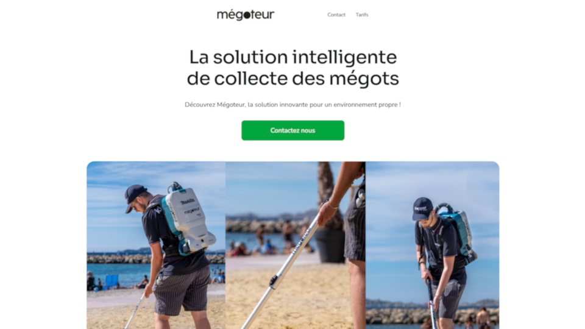
Camilia mapped the key arguments: the ALCOME funding angle, the GPS traceability pitch, the circular economy story, the cost-per-commune framing. My job was to compress that into 3 pages that a municipal director would actually finish reading. Every layout decision served legibility under time pressure: clear hierarchy, no decoration competing with the message, a visual structure that let the eye navigate without instruction.
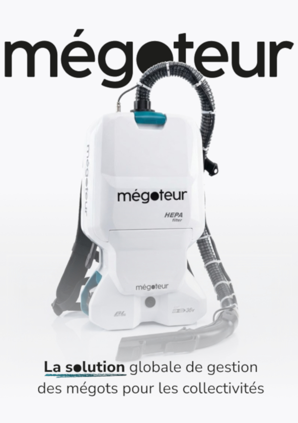
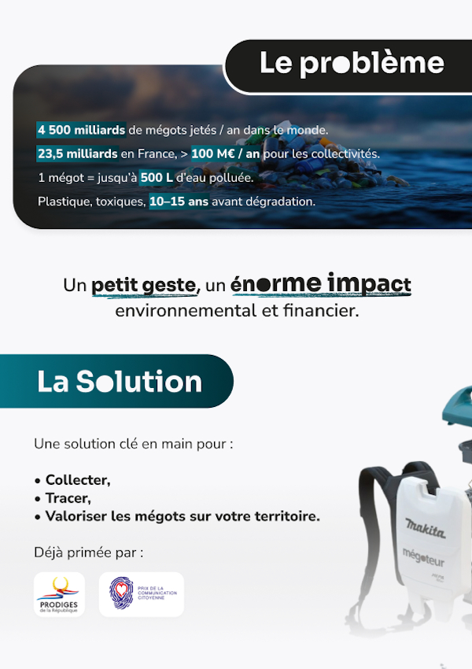
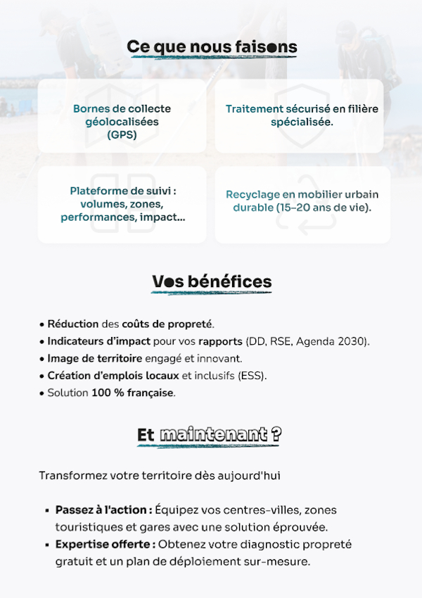
The bonus deliverable was a municipality-facing Instagram carousel, designed to arrest the scroll
and make the case in four slides. Structure: a shock image full-bleed with a dark gradient overlay
and the Mégoteur logo anchored top left, a stat slide with the impact number front and center,
an explanatory slide breaking down the problem and solution, then a closing sales message.
The
design language ran on contrast: dark backgrounds, white body text, and cyan highlight blocks
for the words that needed to land. The same primary color I used across all the Mégoteur
deliverables, chosen to read as urgent without tipping into aggressive.
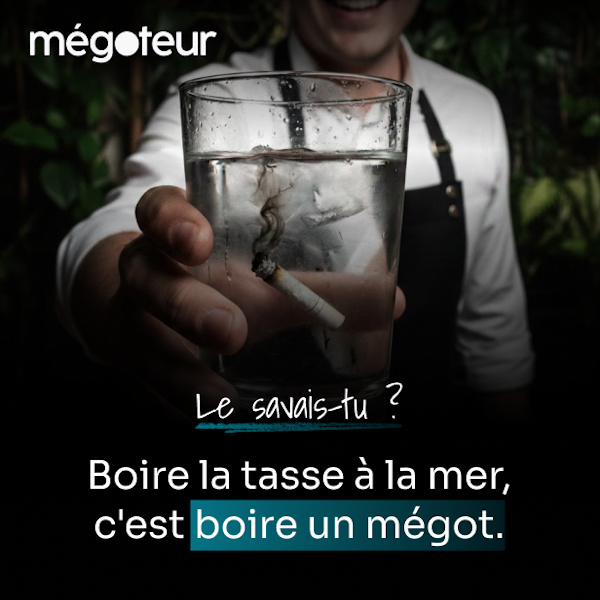
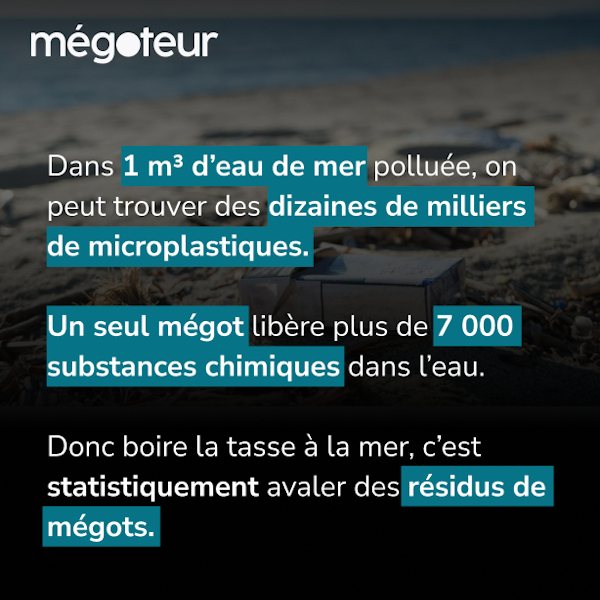
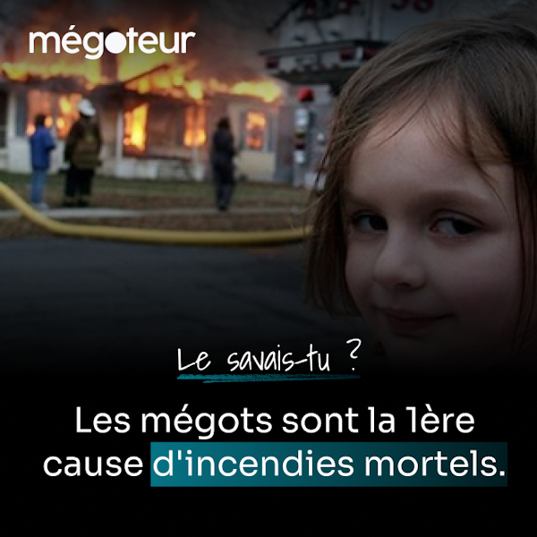
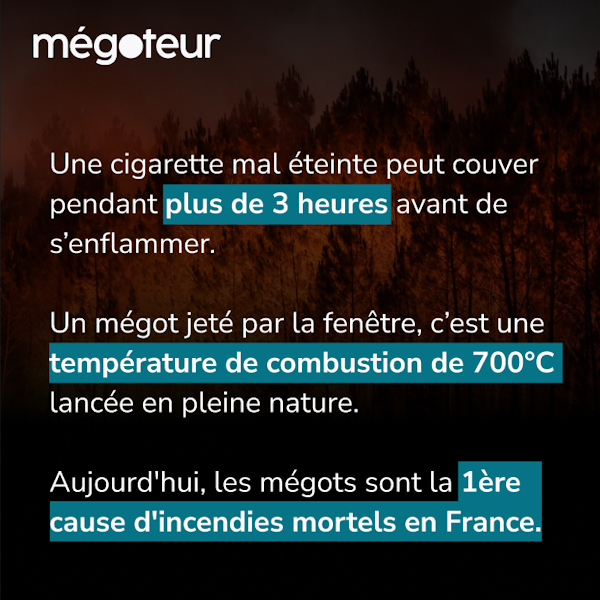
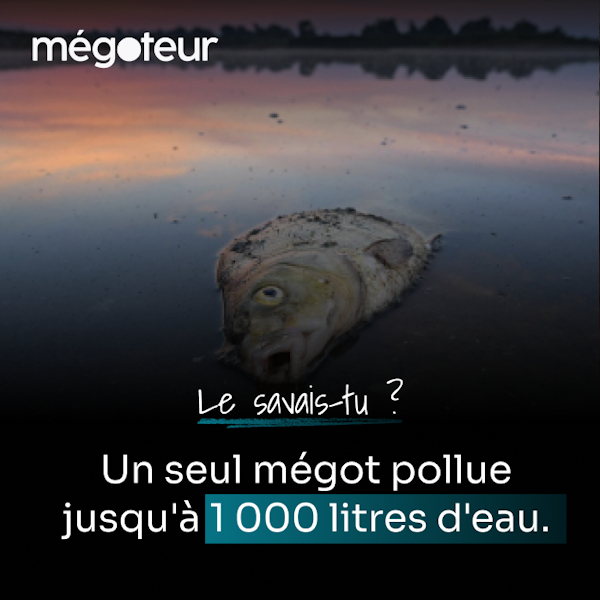
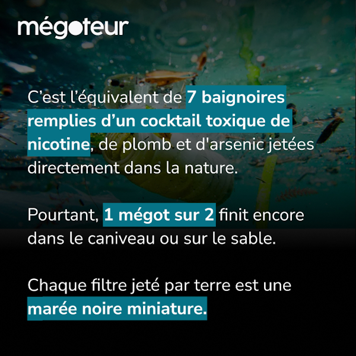
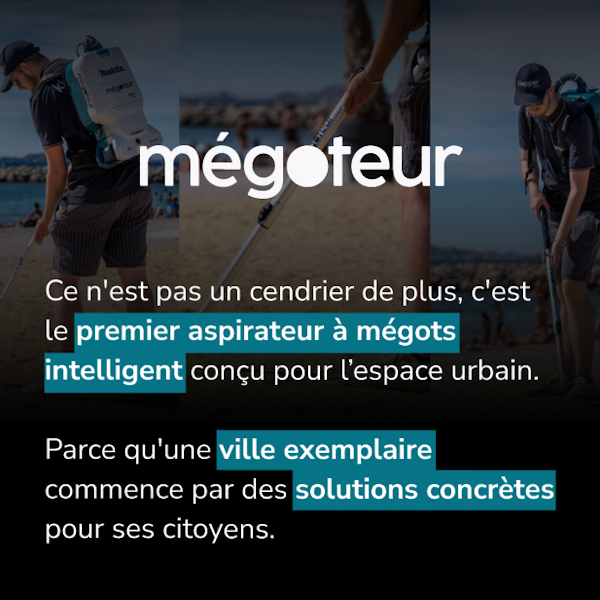
48 hours. Two deliverables. Real constraints.
A complete visual communication package for a real BtoG client, delivered under competition conditions:
a 2-page commercial brochure and a municipality-facing Instagram kit. The team
placed second out of five, graded 12/20 on strict jury criteria.
What it proved: designing under
hard time pressure, with real constraints and a non-design audience as the target, is a different skill
than designing freely. Speed forces prioritization. Every element that doesn’t earn its place gets
cut. That discipline is the whole job.